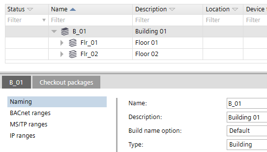

Building element details
The building elements Details pane has the following tabs:
- Details
- Check out packages

Details tab > Naming
The Details tab title changes according to the selected element, e.g. B_1, where B_1 is the building name.
Setting | Description |
|---|---|
Name | Name of the element. |
Description | Description of the element. |
Build name option | Determines the way the location name of automation stations is built.
The default is Reuse, i.e. the name Flr_2 is reused, building a location name like B_1'Flr_2. |
Type | Type of building element e.g. building, plant, etc. |
Details tab > BACnet ranges
The default values found in BACnet ranges are derived from Settings > Address defaults > BACnet.
Address defaults
Setting | Description |
|---|---|
Start of name index | The first index number for the device when connected to the network. |
Name index end | The last index number for the device when connected to the network. |
Details tab > MS/TP ranges
The default values found in MS/TP ranges are derived from Settings > Address defaults > MS/TP.
Address defaults
Setting | Description |
|---|---|
Start MAC address | First MAC address for the MS/TP port. |
End MAC address | Last MAC address for the MS/TP port. |
Network number | Number that identifies the network. |
Baud rate | Specifies the rate at which data is sent to the bus. |
Max. manager address | Set the Max manager address to prevent the passing of the token to unused MAC addresses situated after the manager. |
Details tab > IP ranges
The default values found in IP ranges are derived from Settings > Address defaults > IP.
Address defaults
Setting | Description |
|---|---|
Start host name index | Fist number of the hostname index. |
End host name index | Last number of the host name index. |
UDP port (hex) | Specifies the UDP port in hexadecimal format from BAC0 to BAD4. |
Use DHCP | If selected, DHCP (Dynamic Host Configuration Protocol) is used to automatically configure the device port. Clear the check box to manually enter the IP address values. |
IP address start | First numerical label that is assigned to the device port. |
IP address end | Last numerical label that can be assigned to the device port. |
Subnet mask | Specifies the subnet within the larger network. |
Default gateway | Specifies a node on a TCP/IP network that serves as an access point to another network. |
Preferred DNS server | The address of the preferred domain name server. |
Alternative DNS server | The address of the alternative domain name server. |
Domain name | Name of the domain e.g. siemens.net. |
Local broadcast UDP port | UDP port for local broadcast setting. UDP port for local broadcast setting (Default 0xBB02 = 47874). Local broadcast UDP is used for messages that do not need to be routed by BBMD, for example, for grouping commands. |
Checkout packages tab
Check-out packages are displayed for building elements, areas, and devices. Check-out packages indicate the corresponding project paths that have to be writable. This allows the identification of the directories to be checked in or out from a project repository in a distributed engineering environment with Branch Office Server (BOS).
Only the top folders are listed because only the top folders have to be checked out.
Column | Description |
|---|---|
Folder | Relative path to the folders where the application templates stations are saved. |
Description | Name of the application template. |
Type | Type of project or template, e.g. application template or ABT Pro project. |